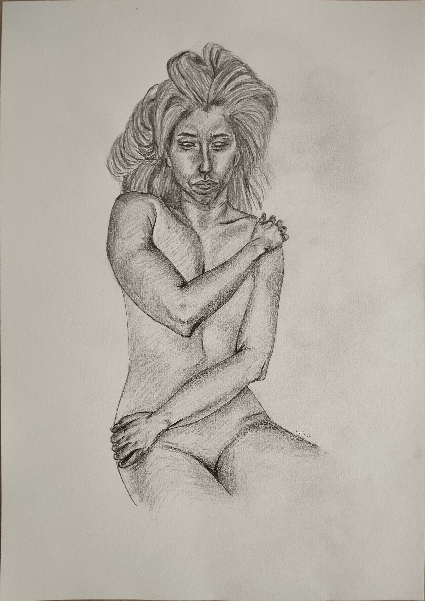

I was faking.
With this collection I want to draw attention to us women faking consent to intimacy. In extreme cases we do it because we are scared for our safety. But we also do it not to hurt our partner's feelings. The experience of enjoying her is then different for each participant. The reality is that she didn't like it. I want us all to be concious of this phenomenon and think of ways to not let it happen in our own acts of intimacy.